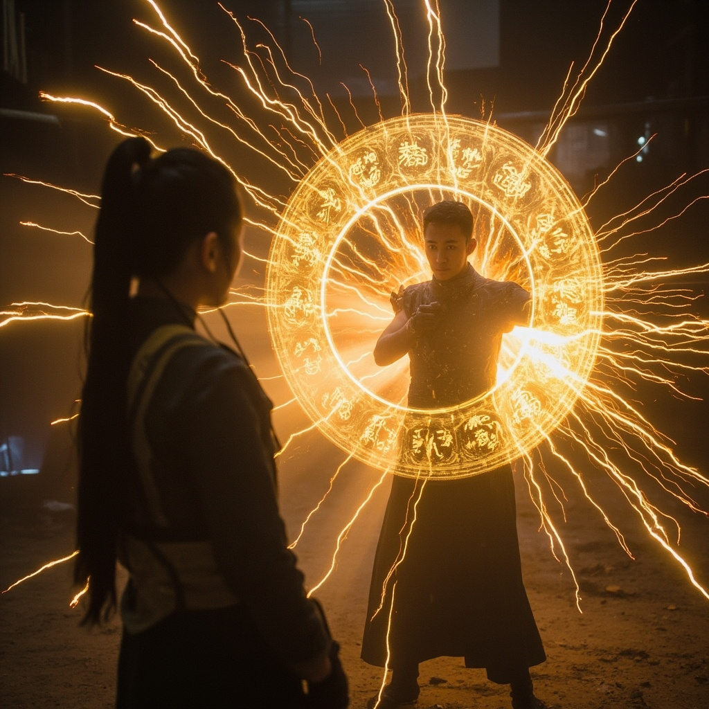
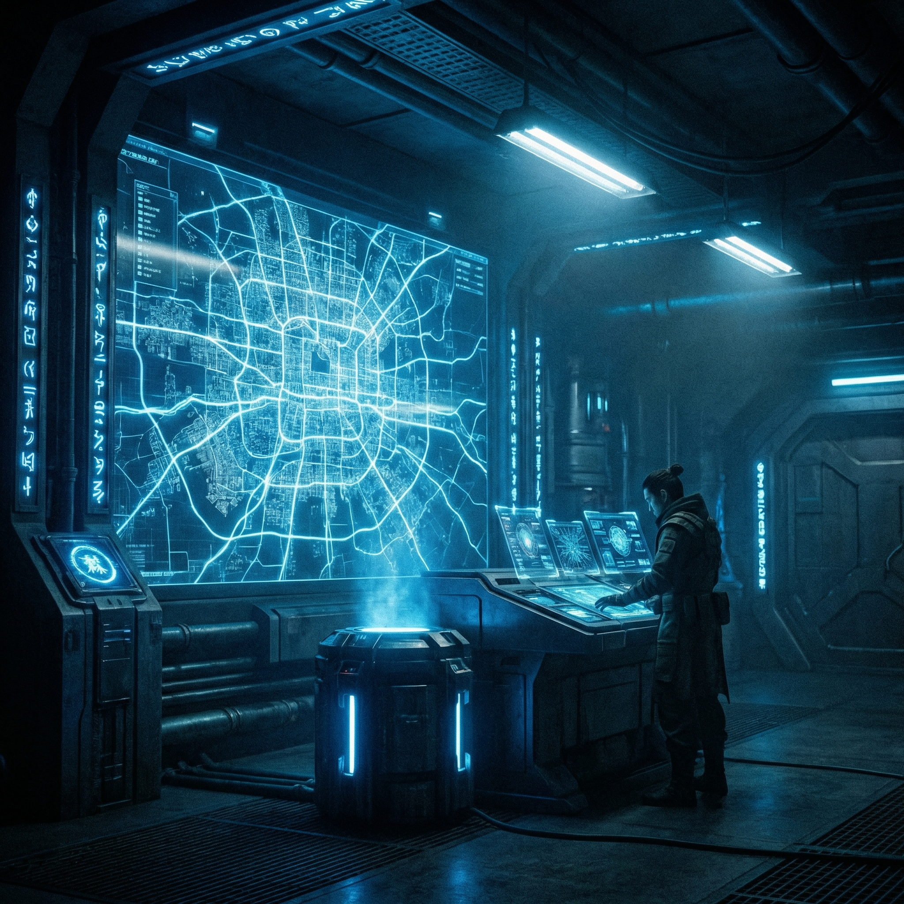
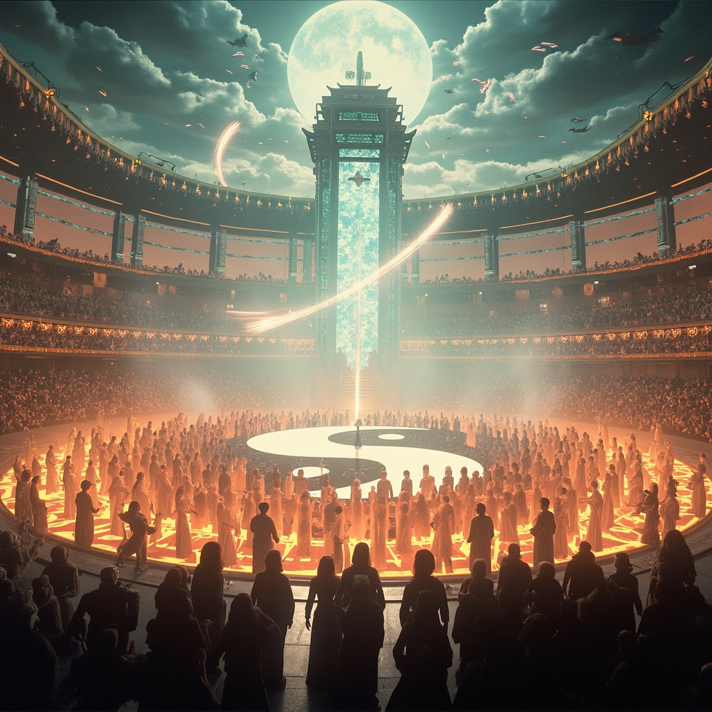

《科技修真傳》有聲畫版本 - 圖文並茂 + 完整朗讀
末法元年一百四十二年，林塵在廢墟中獲得神秘的靈芯系統，踏上修真之路。
林塵深入研究靈芯技術，揭開末法時代的真相，開始數據化修煉之路。
林塵在廢墟城市中探索，面對靈化獸的威脅，運用靈芯系統戰鬥。
林塵發現上古天機閣的遺址，獲得傳說中的SSS級靈芯，遇見天機子殘魂。
林塵啟動太初系統，進入由數據構成的虛擬空間，天機子再現傳授修煉法門。
太初系統任務模塊啟動，第一個主線任務：收集靈氣結晶 × 10。林塵開始修煉靈罡護體功法。
林塵康復後，利用靈氣結晶加速修煉，掌握靈罡護體和靈刃兩門功法，實力大進。
林塵來到數據宗臨時基地，見證第二代靈啟機原型測試。卻遭遇六個敵人快速接近！
林塵揭示末法時代的真相：靈氣是可編程粒子，修仙的本質是生命體與粒子的諧振。新成員們感受到靈氣覺醒。
林塵進入心鏡迷宮，在記憶迴廊中重溫三年前的噩夢。隨後墜入黑暗虛無，聽到自己充滿絕望的聲音。

林塵覺醒，胸口晶片碎裂。信息靈氣覺醒，以手擋下敵人攻擊並反彈。
林塵在靈脈核心進行前所未有的工程，開始建立覆蓋全城的靈數網絡。
林塵、明鏡、顧澄三人穿越廢棄地鐵隧道，遭遇自動防禦炮台攻擊！

明鏡等人來到安全屋，意外遇見失蹤二十年的蕭衍——靈數聯盟的長老！
林塵血脈覺醒，得知靈根真相——原來是上古基因編輯的產物！眾人傳送至蓬萊仙境，展開修煉之路。

蓬萊仙境舉行宗門大比，林塵在決賽中大放異彩！戰後慶功宴熱鬧非凡，修煉之路更上一層樓。
更多章節正在製作中...